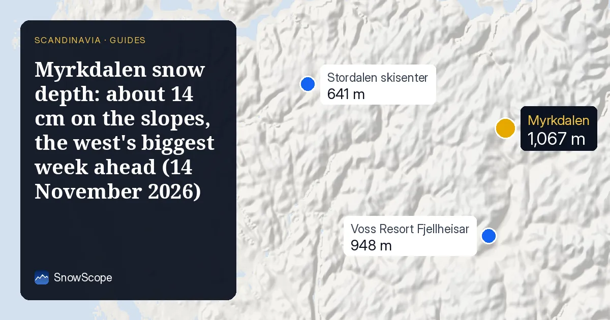

Myrkdalen snow depth: about 14 cm on the slopes, the west's biggest week ahead (14 November 2026)
Myrkdalen has thin cover right now, with roughly 14 cm across the mid-slopes and barely 9 cm at the base. The upper mountain at 1067 m holds more—around 33 cm—but the valley floor near the village is almost bare. This is because the nearest station, Mjølfjell at 695 m and 32 km away, measured 10 cm on 13 November, and that gauge sits lower than most of Myrkdalen's terrain.
See the live snow forecast for Myrkdalen in the SnowScope appSnow depth, powder alerts and the 3D map, free.

Seven days of heavy snow from tomorrow
The next week will transform the mountain. SnowScope shows about 44 cm at the top, 27 cm at mid-mountain, and 7 cm at the base. The heaviest falls arrive in the first two days: roughly 28 cm is forecast for the summit alone between tomorrow and the day after.
Other forecasts run higher—up to 108 cm at the top—so this is a conservative view. The catch is the snow line, which sits near 580 m. That means about half the water at the base will come down as rain, not snow. The upper lifts and runs will be well inside the snow zone.

Still behind, but catching up fast
On 14 November in a typical winter, Myrkdalen holds 59 cm at the top, 51 cm at mid-mountain, and 40 cm at the base. Right now it is well short. Yet the mountain has a track record of recovery. By 30 November, the usual depth reaches 93 cm at the top; by 15 December, 120 cm. This coming week closes much of the gap.
A median winter builds to 319 cm at the top by its peak in March, and snow cover lasts about 265 days. Last winter topped out at 227 cm—noticeably lower than the long average.
How the recent pattern has shifted
Over 46 winters of data, Myrkdalen's character has changed. The first 15 winters showed a median peak of 362 cm at the top; the past 15 winters averaged 282 cm. Snow days fell from 287 to 248. The mountain remains one of southern Norway's most reliable, but extremes have become less common.
This shift mirrors a wider pattern across Scandinavia: snow arrives later, melts earlier, and the deepest months are less extreme than they were two decades ago.
The geography that shapes what lands where
Myrkdalen's steep vertical—621 m from base to top—means temperature and precipitation type change dramatically over short distances. The Atlantic feeds in moisture from the west. Near Voss in the valley, that air mass dumps its load as rain. Higher up, it falls as snow. This is why the top often catches two or three times more than the base in a single storm.
The 580 m snow line forecast for the coming week is typical. It puts the lower runs in a rain-and-slush zone while the mid and upper slopes gather metres of new snow.
When to expect the best snow this season
Myrkdalen's strongest week in a typical winter is week 12 (mid-March), when the summit usually holds 288 cm and snow is at its deepest and most stable. But the first real skiing window opens by late November. The snow line will climb and fall with every storm; expect the best riding to shift uphill and downhill through the season.
Early season snow is wet and dense. As November turns to December, the base builds and cold settles in.
Tips for skiers
- New snow on a thin base and steep slopes means high avalanche risk: check the Varsom bulletin before leaving marked terrain.
- The road up from Vossestrand will be wet at the bottom and snowy at the top on the same day. Drive with care.
- The resort opens 27 November. If you visit before, stay on marked runs; unmarked terrain may hide rocks.
- In the first 48 hours of the forecast, up to 28 cm arrives at the summit. Wind-loaded gullies and lee slopes will be loaded.
- The base will stay slushy and patchy through this event. Ski the mid-mountain and upper runs for the best conditions.
About these numbers
Resort snow depths are the deepest snow on the resort's upper slopes on the date shown; they are estimates for an area, not a measurement at one point. Forecasts can change. Always read the official avalanche bulletin before going off-piste.
Official avalanche bulletins: Varsom (NVE)
Cite this report
For research, teaching or the press: the numbers and charts are free to reuse under CC BY 4.0 with this citation.
SnowScope (2026), Myrkdalen snow depth: about 14 cm on the slopes, the west's biggest week ahead (14 November 2026), https://snowscope.app/blog/en/2026/11/myrkdalen-snow-depth-14-november-2026.html, accessed 2026-11-14
SnowScope (Atlas Labs). (2026, November 14). Myrkdalen snow depth: about 14 cm on the slopes, the west's biggest week ahead (14 November 2026). SnowScope snow reports. https://snowscope.app/blog/en/2026/11/myrkdalen-snow-depth-14-november-2026.html
BibTeX
@misc{snowscope2026myrkdalensnowdepth14nove,
author = {{SnowScope (Atlas Labs)}},
title = {Myrkdalen snow depth: about 14 cm on the slopes, the west's biggest week ahead (14 November 2026)},
year = {2026},
month = nov,
howpublished = {\url{https://snowscope.app/blog/en/2026/11/myrkdalen-snow-depth-14-november-2026.html}},
note = {Published 2026-11-14 17:59 UTC; accessed 2026-11-14}
}· CC BY 4.0 · Methods, data and tools →
Myrkdalen: snow and temperature by height, this winter vs last (tools) →
Follow Myrkdalen
Free: a message when fresh snow is coming, and the forecast every morning.
More snow reports

Trondheim's weekend brings rain and mild air, not snow. Inland snow sits 5–18 cm deep, but Bymarka trails are wet. Know the year-round leash rules before you walk.

Tromsø's husky farms open from mid-November. On 13 November, town had 6 cm but the mountains held 44 cm. Here's how to book and what to know.

No snow yet in Tampere on 14 November: bare ground at all stations, wet flakes forecast Saturday. Dog parks open year-round; ski tracks ban dogs except on special dog-only evenings.